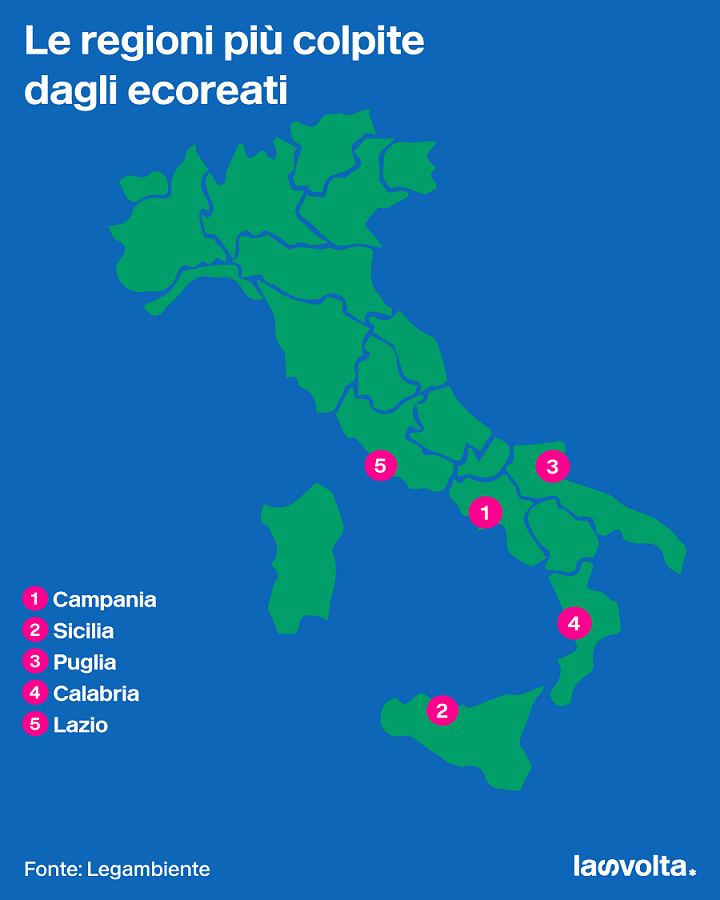

Il termine "eco-mafia" si riferisce a gruppi criminali coinvolti nel traffico illegale di rifiuti pericolosi,
lo smaltimento illecito di materiali tossici, e altre attività illegali connesse all'ambiente.
Queste organizzazioni guadagnano operano in aree dove la vigilanza è scarsa.
e proteggere l'ambiente.
Eco-Mafia in Italia

In Italia, l'eco-mafia ha una presenza significativa nel sud-italia, dove sono state scoperte numerose discariche
abusive di rifiuti tossici. Oltre al sud-italia ci sono casi simili verificati in altre parti del paese.
Le autorità italiane hanno intensificato gli sforzi per combattere l'eco-mafia attraverso leggi più severe,
operazioni di polizia mirate e sensibilizzazione pubblica.
Tuttavia, è ancora una sfida significativa, che richiede un impegno continuo per proteggere l'ambiente e contrastare
le attività criminali che lo danneggiano.